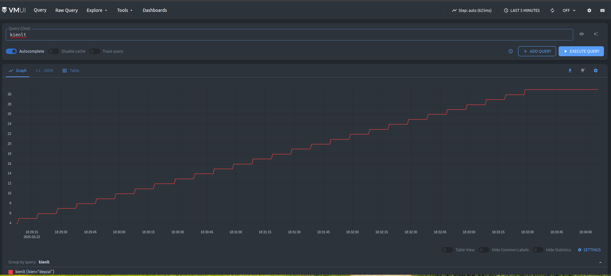
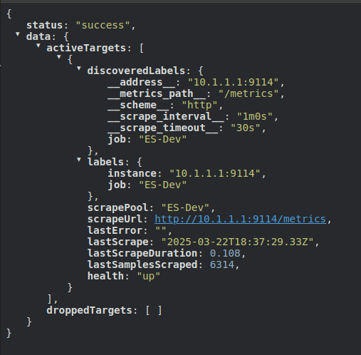

What is VictoriaMetrics(VM)?
- VictoriaMetrics is a free open source time series database (TSDB) and monitoring solution, designed to collect, store and process real-time metrics
- My company used VM to replace Prometheus for high availability and better performance.
- In this article i will introduce 2 type of VM:
- Single node VM: for small business like have lower than 10-20 servers
- Cluster VM: for larger business
Small business with single node VictoriaMetrics
Docker compose
- Yes, using docker compose for the fast deployment and easy to control.
- Docker compose file:
services:
victoria-metrics:
image: victoriametrics/victoria-metrics:v1.114.0
container_name: vm_single_node
ports:
- "8428:8428" # Default port for HTTP API
volumes:
- vm_data:/storage # Save data to a volume
- ./prometheus.yml:/etc/vm/prometheus.yml # Mount file config
command:
- "-storageDataPath=/storage" # Specify the path to store data
- "-retentionPeriod=30d" # Retain data for 30 days
- "-promscrape.config=/etc/vm/prometheus.yml" # Specify the path to the config file
restart: unless-stopped
volumes:
vm_data:
prometheus.ymlfile:
global:
scrape_interval: 60s # Interval between each scrape
scrape_timeout: 30s # Timeout for each scrape
scrape_configs:
- job_name: 'ES-Dev'
metrics_path: '/metrics'
static_configs:
- targets: ['10.0.0.1:9114'] # target to scrape
- I guess i don't need to write how to start this container!
Insert and test query
- Insert script, run this and wait like 2-3 minutes to fill up metrics
#!/bin/bash
for i in $(seq 1 100); do
timestamp=$(date +"%Y-%m-%d %H:%M:%S")
echo "[$timestamp] Inserting metric: kienlt{kien=\"depzai\"} $i into http://localhost:8428/api/v1/import/prometheus"
curl -d "kienlt{kien=\"depzai\"} $i" http://localhost:8428/api/v1/import/prometheus
echo "[$timestamp] Sleep for 10 seconds. Insert count: $i"
sleep 10
done
echo "Completed!"
- Query with VM ui at
http://localhost:8428/vmui

Scrape Target
- We have defined our target need to scrape metric in file
prometheus.yml - Let's check target at the endpoint: http://localhost:8428/api/v1/targets

Conclusion
- There are many feature of VM but i want to keep this simple and short for single node, since we still have Cluster VM to go.